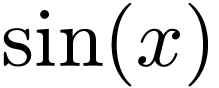

绘制
设定横轴和纵轴的刻度
设定横轴的范围
png] |
% -width 0.27par plot sin(x) |
png] |
% -width 0.27par set xtics pi; set ytics 1 plot sin(x) |
png] |
% -width 0.27par set xtics pi; set ytics 1 plot [-pi:pi] sin(x) |
第一行%开头的语法是特殊语法，用于控制Gnuplot生成的图片在墨干中的大小
xtics和ytics用于控制横轴和纵轴的刻度
在plot的同时设置横轴的范围
同时绘制两个函数
教科书上常见的样式
绘制椭圆
png] |
% -width 0.27par xmin=0; xmax=6.5 ymin=-1.2; ymax=1.2 xgap=pi; ygap=1 f(x)=sin(x); g(x)=cos(x) set xtics xgap set ytics ygap set xrange [xmin: xmax] set yrange [ymin: ymax] plot f(x), g(x) |
右边，为了绘制教科书上常见的样式，第二部分做了如下改进：
-
取消边框
-
设置过原点的坐标轴
-
设置横轴和纵轴的刻度
-
设置横轴和纵轴的箭头
-
设置横轴和纵轴的范围
大家只需要复制代码片段，更改第一部分的预设的值和函数，更改最后一部分的plot绘制命令即可。
png] |
% -width 0.27par xmin=-6.5; xmax=7 ymin=-1.2; ymax=1.2 xgap=pi; ygap= 0.5 f(x)=sin(x) g(x)=cos(x) unset border set zeroaxis linetype -1 linewidth 1.7 set xtics axis set ytics axis set xtics xgap set ytics ygap set arrow from xmin,0 to xmax,0 set arrow from 0,ymin to 0,ymax set xrange [xmin:xmax] set yrange [ymin:ymax] plot f(x),g(x) |
右边，当我们将椭圆方程
视为函数 时，这个函数在
 时描述的就是椭圆的边界。通过绘制这个函数的等高线，并且只选择
这一特定的等高线，我们就可以得到椭圆的图形。
时描述的就是椭圆的边界。通过绘制这个函数的等高线，并且只选择
这一特定的等高线，我们就可以得到椭圆的图形。
png] |
% -width 0.27par xmin=-3; xmax=3.5 ymin=-4; ymax=4.5 xgap=1; ygap=1 f(x,y)=x**2/4 + y**2/9 - 1 set contour base unset surface set view map set isosamples 100, 100 set cntrparam levels discrete 0 unset xtics unset ytics unset border set zeroaxis linetype -1 linewidth 2 set xtics axis set ytics axis set xtics xgap set ytics ygap set arrow from xmin,0 to xmax,0 set arrow from 0,ymin to 0,ymax set xrange [xmin:xmax] set yrange [ymin:ymax] splot f(x,y) |